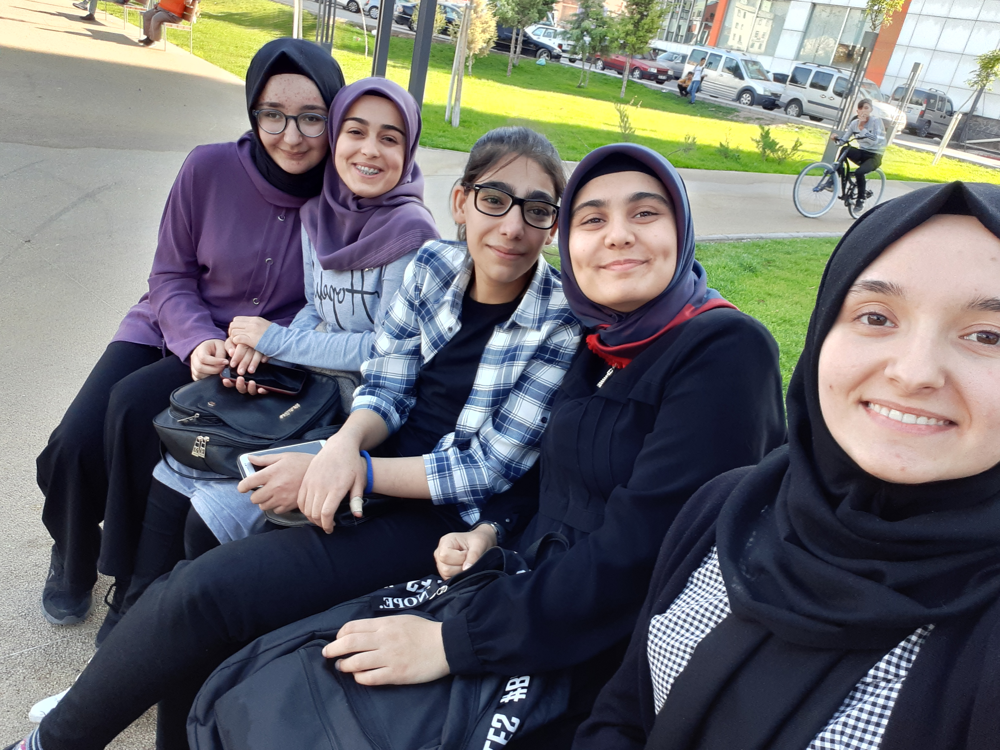

Tam adım Hüsna ALTIN .2001 yılının Kasım ayında Aksaray ilinin Ortaköy ilçesinde doğdum. Annem ev hanımı babam ise çiftçiydi.Hepsi birbirinden oldukça farklı huylara sahip ikisi kız biri erkek olmak üzere üç kardeşim var. Ablamlar üniversite mezunu erkek kardeşim ise lise ikinci sınıf öğrencisi henüz.
Burada ailemi görebilirsiniz...
Hadi biraz geriye gidip çocukluğuma dönelim.Çocukluğum tamamen sokakta oyun oynayarak geçti diyebilirim sanırım. Fazlasıyla sessiz ve içe dönük bir insan olmama rağmen oldukça fazla arkadaşım vardı ve benim için o yılları mutlulukla anmama sebep oldular. İlkokul ve ortaokul yıllarımda yine bu arkaaşlarımla beraber oldukça güzel geçti.
Lise yıllarımda ise onların yerini aratmayacak kadar güzel arkadaşlar edindim. Liseyi köyümüzde lise olmadığı için yatılı olarak okumak zorunda kalsam da dört yıl boyunca öğretmenlerim ve yurttaki arkadaşlarım sayesinde kendimi hiç evden uzakta hissetmedim.Lise son sınıfa kadar ailem de ben de hep tıp okumamı istiyorduk ama lise son sınıfta tıp değil bilgisayar mühendisliği okumaya karar verdim.Ve bunun için çalışmaya başladım. Bir yıllık mezunluğun ardından istediğim bölüme yerleştim.

Lisedeki arkadaşlarımla...
Her ne kadar istediğim bölüme yerleşmiş olsam da ilk yıl malesef pandemi yüzünden yüz yüze eğitim alma şansım olmadı. Açıkçası kaybettiğim yakınlarımı düşününce buna üzüldüğümü söyleyemem. Bir yılın ardından nihayet okulumla ve arkadaşlarımla tanıştım. Buradaki arkadaşlarım da oldukça cana yakın ve sevecenler. Onlarla birlikte gezmekten ve yeni şeyler deneyip keşfetmekten hoşlanıyorum.
Arkadaşlarımla gezerken...
Her ne kadar hayatımın büyük bir kısmını arkadaşlarım dolduruyor gibi görünsede vaktimin büyük bir kısmını okulum ve ödevlerim için harcıyorum. İlk yıl benim için zorlu geçsede bitmek üzere . Bilgisayar mühendisliği okurken geride bıraktığım iki yıl bana pekçok şey kattı. Sabır ve sırt ağrıları bunlardan sadece ikisi.:)Ama kendimi bir şeyler yapmak için çabalarken oldukça iyi hissediyorum ve bölümümü çok seviyorum